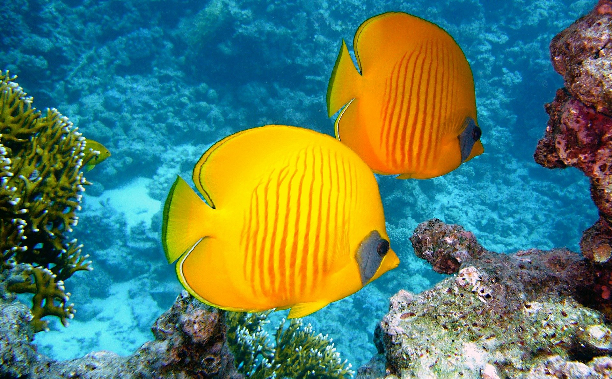
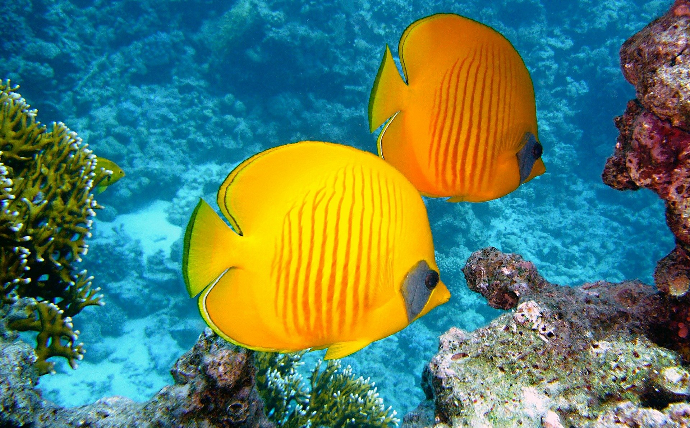

Spring
It's Daisy
Spring is the first of the four seasons of the year,between winter and summer.
Meteorologically, it usually refers to March to May according to the solar calendar.
Spring is more important than any other season because it is not only
the beginning of the four seasons,but also the beginning of the year.
Among the four seasons, spring wind speed is the most diverse, and in particular,
the three hour wind speed is concentrated in the first month of spring, the first month of the lunar calendar.
In many cases of Korean literature, spring itself is symbolically expressed as a sense of vitality, brightness, or rebirth.
The first time to see swallows, heralding spring, is mid-April in the southern coast.
[Source: Encyclopedia of Korean National Culture (Spring)]
Summer
It's Dolphins
Meteorologically, June, July, and August (April, May, and June of the lunar calendar)
is usually called summer, but astronomically it refers to the period from the summer
solstice (around June 22) to the autumn equinox (around September 23).
It refers to the period from (around May 6) to autumn (around August 8).
In the natural or meteorological/climatic seasons,
the average daily temperature is usually 20-25℃ and
the daily maximum temperature is 25℃ or higher in early summer and daily average temperature.
The monsoon season is 20-25℃, the daily maximum temperature is 25℃ or more,
the precipitation is concentrated, the midsummer is the daily average temperature is 25℃
or more and the daily maximum temperature is 30℃ or more,
and the daily average temperature is 20-25℃ and the daily maximum temperature is 20-25℃.
It is subdivided into late summer with a temperature of 25°C or higher.
This period differs slightly depending on the region.
[Source: Encyclopedia of Korean National Culture (Summer)]
Autumn
It's Seal.
Autumn is the third of the four seasons of the year, between summer and winter.
Meteorologically, September to November is usually referred to as autumn,
but autumn in Sesi Wind refers to the period from July to September of the lunar calendar.
As it is the season of harvest and the season of preparing for winter,
customs related to gratitude for the harvest and the origin of a good harvest
are concentrated in this period.
As the mountain stream is colored with autumn leaves,
autumn leaves play is also established as a national game.
Art works such as literature, music, and art based on autumn
are characterized by many works that empathize with the various forms of autumn,
such as loneliness, sorrow, and wretchedness.
[Source: Encyclopedia of Korean National Culture (Autumn)]
Winter
It's sealions
Meteorologically, it usually refers to the period
from December to February, but based on changes in various climatic factors
such as temperature and precipitation, the start and end of winter and the length of winter
appear variously depending on the place and year.
The beginning of winter is Ipdong (November 8) and the end is Ipchun (立春, February 4),
when spring begins.
Natural seasons include early winter
(average daily temperature below 5°C and daily minimum temperature below 0°C),
late winter(average daily temperature below 0°C and daily average temperature
below 0°C and minimum daily temperature below -5°C) and late winter
(average daily temperature below -5°C).
It is 5℃ or less and the daily minimum temperature is 0℃ or less).
Winter starts early in the northern regions and ends later in northern regions.
Early winter begins on November 27 in Seoul and November 28 in Daegu.
And in Jeju, the daily minimum temperature does not drop below freezing even in early winter.
[Source: Encyclopedia of Korean National Culture (Winter)]
 
